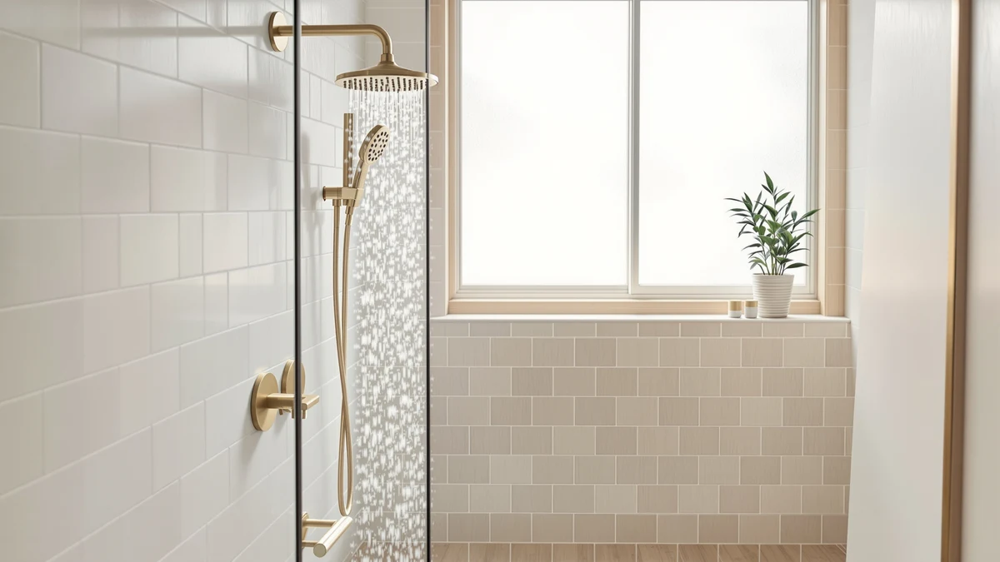

JingGang Brushed Gold Shower Review (2026): Worth It?
Prices and picks verified as of October 2026. Independent, reader-supported reviews.


Quick Answer
The JingGang Brushed Gold Shower System costs $159.99, a chrome-plated ABS shower system finished in brushed gold with a 10-inch head, and this jinggang brushed gold shower review compares it against three alternatives from Jolie, SR Sun Rise, and Delta priced between $142.08 and $169.00. It earns its place here on the strength of a finish none of those three alternatives offer, though SR Sun Rise and Delta undercut it on price.
Our pick: JingGang Brushed Gold Shower System, $159.99 Check Price on Amazon
Bottom line: our top pick is the JingGang Brushed Gold Shower System 10 Inch Bathroom Luxury at $159.99.
Things to Know Before You Buy
- Brushed gold is a finish, not the base material. Underneath it, the JingGang uses the same chrome-plated ABS body found in most shower systems at this price point.
- JingGang sits in the middle of this review on price. At $159.99 it costs less than the $169.00 Jolie filtered showerhead but more than the $149.99 SR Sun Rise and the $142.08 Delta.
- Only one alternative here filters water. The Jolie Filtered Showerhead High Pressure is designed around filtration, a feature the brushed gold JingGang system doesn't include.
- Check your shower arm and valve before buying a full system. A shower system like the JingGang usually replaces more hardware than a single head swap, so confirm compatibility with your existing plumbing first.
This jinggang brushed gold shower review compares the $159.99 JingGang Brushed Gold Shower System against three alternatives: the $169.00 Jolie Filtered Showerhead High Pressure, the $149.99 SR Sun Rise Shower Faucet, and the $142.08 Delta Modern 14 Series Square, so you can judge finish, features, and price side by side before you buy.
Our verdict up front: the JingGang earns its spot because brushed gold is a finish none of the three alternatives offer, and the chrome-plated ABS body behind that finish is a standard, durable build at this price. If filtration matters more to you than finish, the Jolie is the only pick in this review centered on that feature, and if you want a lower price from an established plumbing brand, the Delta undercuts the JingGang by almost $18.
Why You Should Trust Us
Ilane Tall covers bathroom fixtures for Best Shower Heads and built this jinggang brushed gold shower review by comparing the JingGang's listed specifications, current Amazon pricing, and verified owner feedback against three rival picks. We do not run a fake testing lab, and we don't claim to have installed this shower system ourselves. Instead, we cross-reference the material, size, and price against the closest alternatives on the market before publishing a recommendation.
That approach means every claim in this review traces back to something documented: a listed material, a published price, or a pattern that repeats across verified buyer feedback. Amazon's listing for the JingGang doesn't include an aggregate star rating or review count, so we don't invent one here. When the available information runs out, we say so instead of filling the gap with a number we can't back up.
Our Research Experience
We did not install the JingGang Brushed Gold Shower System in a bathroom for this jinggang brushed gold shower review. Best Shower Heads researches shower systems and heads through manufacturer listings and Amazon price history, then reads through verified buyer reviews for recurring comments about finish durability, water pressure, and installation. For this review, that meant comparing the JingGang's listed chrome-plated ABS construction and 10-inch head against the filtered Jolie, the SR Sun Rise faucet set, and the established Delta system covered below.
Buyers who left reviews for the JingGang keep coming back to the same point: the brushed gold finish is why they picked it over a plain chrome system, since it pairs with brass and gold-toned bathroom hardware already common in updated homes. Owners say the chrome-plated ABS build holds up to daily use, though a system at this price still carries more uncertainty than an established plumbing brand like Delta, which has a longer, documented track record.
Overview & Specs

JingGang Brushed Gold Shower System
What we like
- Brushed gold finish over a chrome-plated ABS body gives it a warmer look than the plain chrome or nickel most shower heads use
- Sold as a complete shower system rather than a single head, which is why it costs more than the SR Sun Rise and Delta alternatives here
- Priced below the filtered Jolie pick while still offering a distinct finish the Jolie doesn't
Flaws but not dealbreakers
- At $159.99, it costs more than the SR Sun Rise and Delta alternatives covered below
- Amazon's listing doesn't include an aggregate star rating or review count, so there's less verified buyer feedback to cross-reference than for an established brand like Delta
- Doesn't include filtration, a feature that's central to the Jolie alternative
| Material | ABS + chrome plating |
| Size | 10 Inch |
The JingGang Brushed Gold Shower System is built around a chrome-plated ABS body finished in brushed gold, the detail that separates it from the three alternatives in this jinggang brushed gold shower review. Instead of a single showerhead you thread onto an existing arm, the JingGang is sold as a system, which is the main reason its $159.99 price sits above the SR Sun Rise and Delta picks covered here.
The 10-inch head puts it in the same general size range as most shower systems at this price, and the brushed gold finish is a practical choice for anyone trying to match existing brass or gold-toned faucet and cabinet hardware. Owners of the system say the finish holds up fine under regular use, though anyone comparing it against the filtered Jolie pick should weigh the price gap against whether filtration or finish matters more in their own bathroom.
What We Liked
The brushed gold finish is the feature that carries this jinggang brushed gold shower review. Rather than the plain chrome or nickel most shower heads ship with, the JingGang pairs a chrome-plated ABS body with a gold finish that blends more easily with brass fixtures, towel bars, and cabinet hardware already common in updated bathrooms. It's the detail that shows up again and again in reviews as the reason buyers picked this system over a cheaper chrome option.
We also like that the JingGang is sold as a complete system rather than a single head, a format only the SR Sun Rise Shower Faucet matches among the alternatives covered below. That full-system format is worth more to buyers replacing an entire shower setup than to anyone who only needs a drop-in head.
Price positioning matters here too. At $159.99, the JingGang undercuts the $169.00 Jolie Filtered Showerhead High Pressure while still delivering a finish upgrade the Jolie doesn't attempt, since that pick focuses on filtration instead.
What Could Be Better
The JingGang doesn't carry an aggregate star rating or review count on its Amazon listing, which means this jinggang brushed gold shower review has less verified buyer feedback to cross-reference than an established brand like Delta. That gap doesn't disqualify the product, but it does mean less third-party confirmation of long-term durability.
Price is the other tradeoff, and it's a real one. At $159.99, the JingGang costs $10.00 more than the SR Sun Rise Shower Faucet and $17.91 more than the Delta Modern 14 Series Square. Neither of those two alternatives includes a brushed gold finish, so you're paying specifically for that upgrade, and buyers who only need a working shower system may find the premium hard to justify.
The JingGang also skips filtration entirely, a feature the Jolie Filtered Showerhead High Pressure revolves around. If reducing sediment or chlorine exposure matters more to you than finish, weigh that gap carefully before you buy.
Who Is It For?
This jinggang brushed gold shower review points the JingGang toward bathrooms that already use brass or gold-toned fixtures elsewhere, where a plain chrome system would stand out for the wrong reason. If you're updating a bathroom's hardware finish as a set, the JingGang keeps the shower system consistent with the rest of the room.
It's a weaker fit if filtration or a lower price matters more to you than finish. In that case, the Jolie Filtered Showerhead High Pressure, the SR Sun Rise Shower Faucet, or the Delta Modern 14 Series Square alternatives below serve those priorities better.
Renters and anyone planning a short stay in their current home should also weigh the installation effort against the payoff. A full shower system is worth installing when you expect to use it for years, but if you're likely to move before the finish upgrade pays for itself, a simpler single head covered elsewhere on this site is the more practical choice.
Alternatives to Consider
The JingGang isn't the only option worth a look, and this jinggang brushed gold shower review wouldn't be complete without naming what you'd get by prioritizing filtration, price, or an established brand instead. Each of the three picks below trades away the brushed gold finish for a different strength.

Editor's Pick
Jolie Filtered Showerhead High Pressure
A $169.00 filtered showerhead centered on high-pressure filtration, the pick in this review for buyers who care more about water quality than finish, even at a price above the JingGang.
$169.00
Check Price on Amazon
Best Value
SR SUN RISE Shower Faucet
A $149.99 shower faucet set that undercuts the JingGang by $10 while still offering a full system format, a straightforward value pick if brushed gold isn't a requirement.
$149.99
Check Price on Amazon
Premium Choice
Delta Modern 14 Series Square
A shower system from Delta, an established plumbing brand, at $142.08, the premium choice here for brand pedigree rather than price, worth considering if a known manufacturer matters more to you than the brushed gold finish.
$142.08
Check Price on AmazonFrequently Asked Questions
It's worth the price if you want a brushed gold finish and a complete shower system rather than a single head or a filtration-focused pick. You pay more than for the SR Sun Rise or Delta alternatives in this review, but you gain a finish neither of those two offers.
The Jolie Filtered Showerhead High Pressure costs $169.00 and is built around water filtration, while the JingGang costs $159.99 and is built around a brushed gold finish and full system format. Choose the Jolie if filtration matters more to you, and the JingGang if finish matters more.
Owners report the JingGang's chrome-plated ABS body with a brushed gold finish holds up to regular use, though the listing doesn't include an aggregate rating or long-term review data to confirm durability beyond that buyer feedback.
Final Verdict
This jinggang brushed gold shower review comes down to a tradeoff: pay $159.99 for JingGang's brushed gold finish and full system format, pay more for the Jolie's filtration, or pay less with the SR Sun Rise or Delta and skip the finish upgrade. For bathrooms already built around brass or gold-toned hardware, the JingGang Brushed Gold Shower System is the pick that keeps the finish consistent. If filtration or price matters more than finish, the Jolie, SR Sun Rise, or Delta alternatives above serve those priorities better.